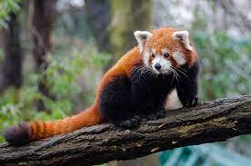

Here are some interesting facts about Red Pandas:
- Red pandas are native to the eastern Himalayas and southwestern China.
- They are also known as the "firefox" or "lesser panda."
- Red pandas primarily eat bamboo, but they are omnivores and will also consume fruit, berries, eggs, and insects.
- They have a thumb-like structure formed by an extension of the wrist bone, which helps them grasp bamboo stems.
- Red pandas are solitary animals and are most active during dawn and dusk.
For more information, you can visit this Wikipedia page.